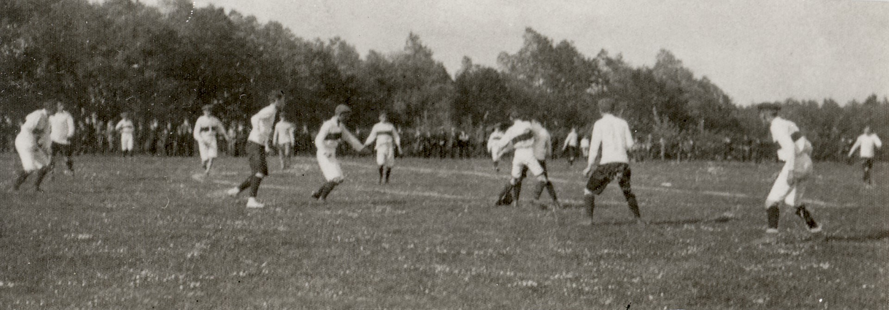
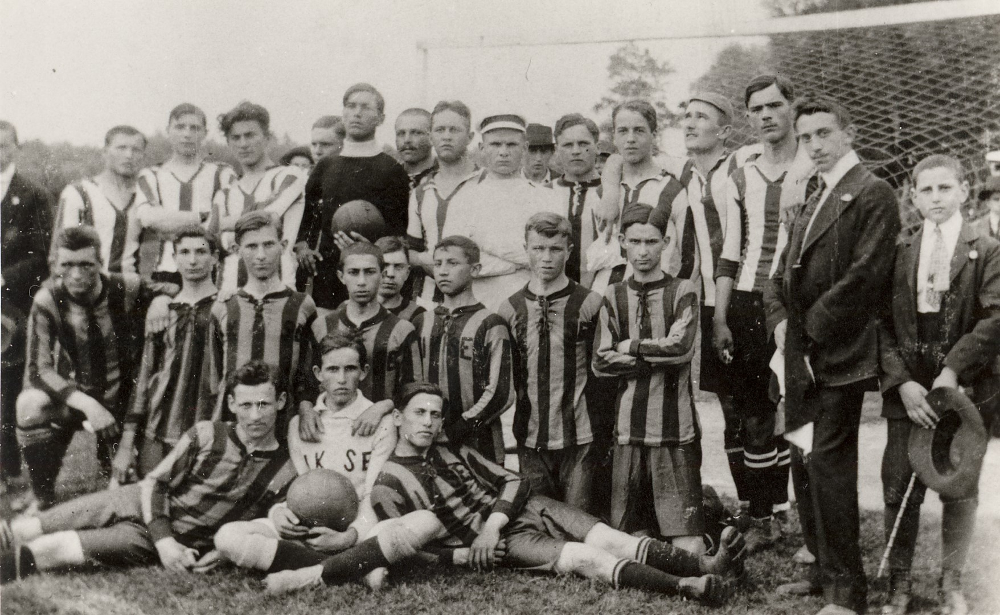
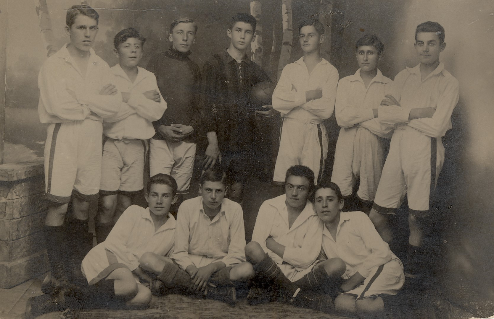
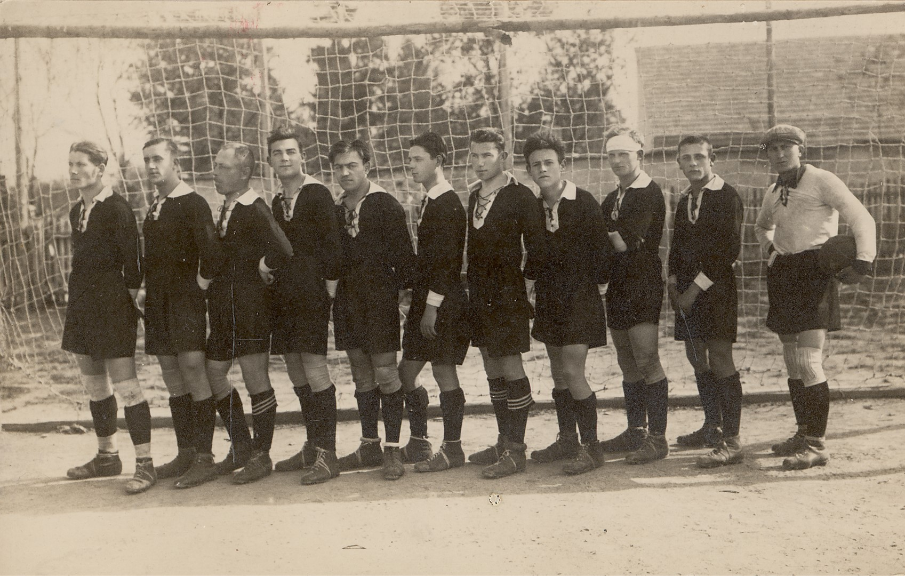
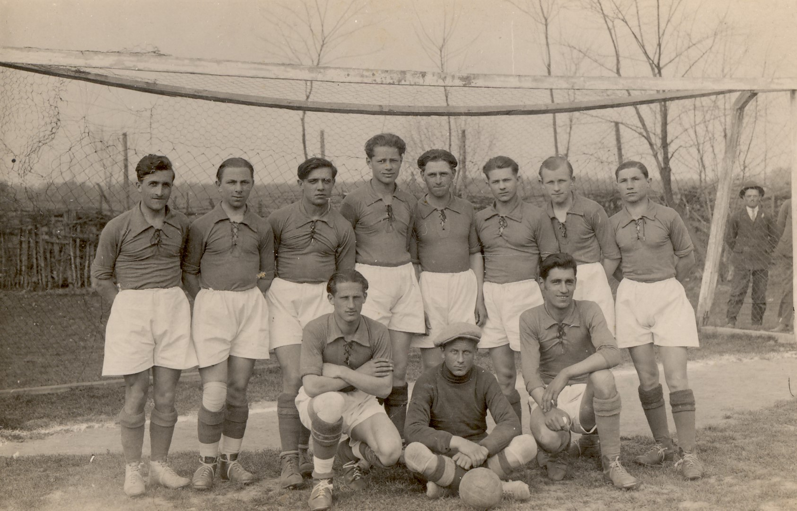
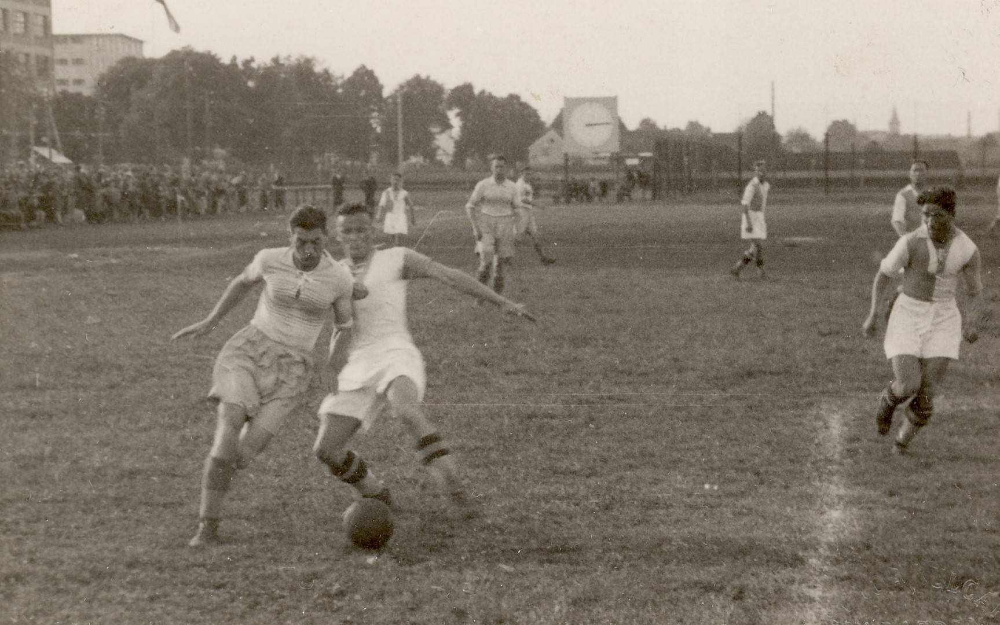
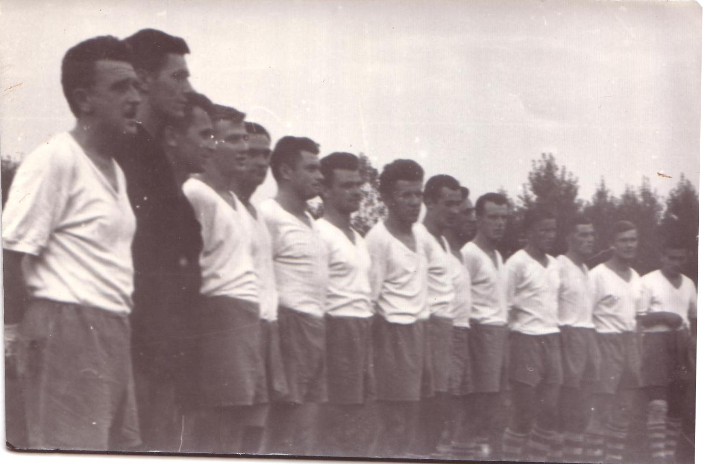
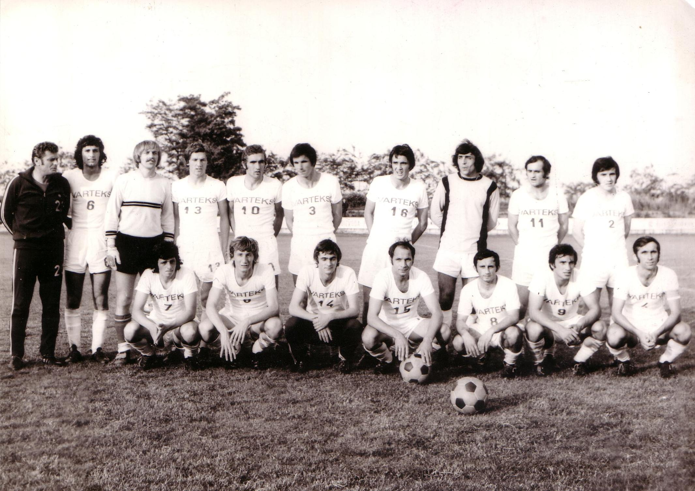
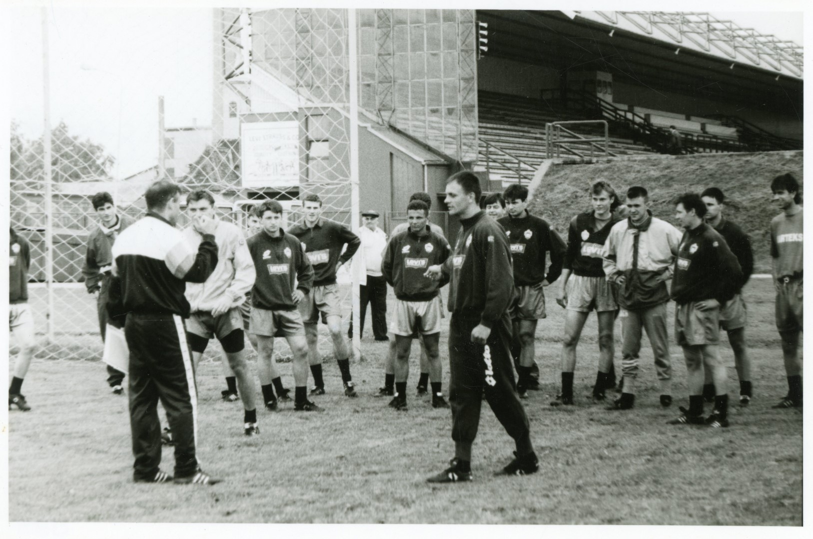

Nogomet
KRONOLOGIJA
1896.
prva nogometna lopta u Varaždinu
1907./08.
u proljetnim i ljetnim mjesecima vježbao se nogomet
15.4. 1909.
u Varaždinskoj gimnaziji osniva se Varaždinski gimnazijski športski klub (VGŠK) koji se bavi igranjem nogometa
15. 5. 1909.
odigrana je prva nogometna utakmica u Varaždinu između varaždinskih (VGŠK) i karlovačkih gimnazijalaca (Olimpija). Karlovčani su pobijedili 4:1, a jedini gol za Varaždince postigao je Bruno Steiner


Detalj s prve nogometne utakmice u Varaždinu, Varaždin, 1910., GMV 104791
1910.
izgrađeno prvo nogometno igralište na pašnjaku kod današnje Banfice
1912.
gimnazijski ravnatelj Pahert zabranjuje igranje nogometa pa se VGŠK izdvaja iz Gimnazije, proglašava Ferijalnim športskim klubom, te mijenja ime u Varaždinski građanski športski klub

Sudionici prve međunarodne utakmice u Varaždinu, Varaždin, 1912., GMV 104788
1912.
prva međunarodna nogometna utakmica u Varaždinu između VGŠK i INSE iz Nagykanizse
1913.
VGŠK postaje Ferijalni športski klub
1917.
neregistrirani nogometni Mintas klub pojavljuje se u Varaždinu (vode ga braća Mintas)

Mintas klub 1917., Varaždin, 1917., GMV 104777
3. lipnja 1919.
osnovan VŠK. (Varaždinski športski klub) u sklopu kojeg se igra nogomet
kolovoz 1919.
osnovana NK Drava

VNŠK Drava, Varaždin, 1919., GMV 104780
1922.
VŠK osvaja titulu Pokrajinskog prvenstva Zagrebačkog nogometnog podsaveza (pobjeđuje Orijent iz Sušaka 1:0)
21. 2. 1931.
osnovan Radnički nogometni klub Sloboda

RNŠK Sloboda, 1931., GMV 104787
14. 5. 1931.
svečano otvoreni sportski tereni TIVAR za nogomet
3. 6. 1931.
osnovan Športski klub Slavija kada su se spojile dvije tvorničke ekipe Tekstilna i Tivar
1937.
nogometni klub Slavija osvaja prvo mjesto u podsaveznoj ligi Zagreb
1938.
nogometni klub Slavija nakon još jednog prvog mjesta i kvalifikacija plasira se u prvu Nacionalnu ligu (1938./39. Slavija je završila na posljednjem, 12. mjestu)

Nogometna utakmica Slavije u sezoni 1938./1939., 1938./1939., GMV 104780
1939.
osnovano Varaždinsko športsko društvo (V.Š.D)
1945.
uz potporu Tivara započelo s radom Radničko fiskulturno društvo RFD Tekstilac, na temeljima bivše Slavije, također u više sportskih sekcija; nogometni klub ekstilac igra prvu utakmicu u Koprivnici
1946.
nogometni klub Tekstilac postaje članom Hrvatske lige
2. 6. 1946.
u Varaždinu upriličen prvi radio izravni radio prijenos jednog sportskog događaja (Tekstilac – Hajduk 3:0) kojeg su ostvarili Antun Golob i Drago Krnoul
1947.
nogometni klub Tekstilac postaje član II. Savezne lige (ali odmah ispada)
1958.
nogometni klub Tekstilac mijenja ime u Varteks
1961.
NK Varteks igra u finalu kupa Maršala Tita (gubi u Beogradu od Vardara iz Skoplja 2:1, a do finala redom su pobjeđivani Rabotnički, Borovo i Hajduk)

Momčad NK Varteksa, 1960./1961., GMV 72787
1962.
varaždinski nogometni sudac Branko Tešanić sudjeluje kao sudac na Svjetskom prvenstvu u Čileu
1974.
NK Varteks osvaja naslov prvaka Hrvatske lige te se vraća u II. saveznu ligu

Nogometaši NK Varteksa, 1974., GMV 72851
1996.
NK Varteks se u sezoni 1995./96. bori za titulu prvaka Hrvatske (završio na 3. mjestu) i igra prvi puta finale Hrvatskog nogometnog kupa (gubi od Croatie iz Zagreba); NK Varteks igra u europskom Kupu kupova (ispada u 2. kolu od Lokomotiva iz Moskve)

Trener Luka Bonačić s igračima, 1996., GMV 106590
1998.
NK Varteks je u finalu Hrvatskog nogometnog kupa
1999.
NK Varteks igrao u četvrtfinalu Kupa kupova gdje ispada od španjolske Mallorce

Trening u Mallorci 1999.g trener D. Besek, GMV 104589
2002.
NK Varteks u finalu Hrvatskog nogometnog kupa
2004.
NK Varteks u finalu Hrvatskog nogometnog kupa